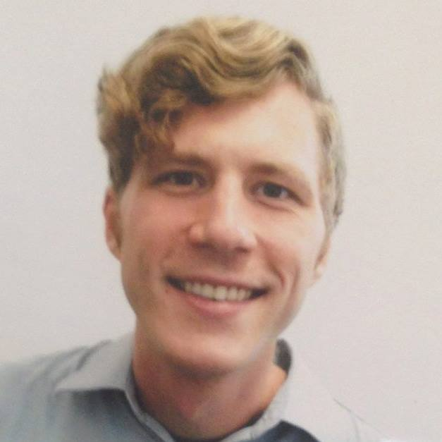

About Me

Mike Damanskis is a digital producer and satirist that lives in Los Angeles. After starting his career as an intern at the Daily Show with Jon Stewart, he went on to produce digital content for sThe Second City, Brave New Films, and FUSION Comedy -each of which saw triple-digit fan growth during his employment.
His feature documentary project, “Remembering to Breathe”, mocks the Alberta tar sands -one of the dirtiest oil mines on the planet. During the film's IndieGogo campaign, the Canadian government filed a bogus copyright complaint for making fun of their "Travel Alberta" campaign. The Electronic Frontier Foundation called the takedown a "crude attempt at censorship" and added it to their "Copyright Takedown Hall of Fame." The film will premiere in November 2019.
Currently, Mike produces a weekly livestream with climate scientist Josh Willis and comedian Andy Cobb, and is studying web development at UCLA Extension.